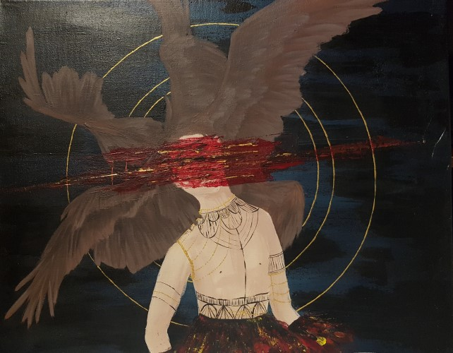
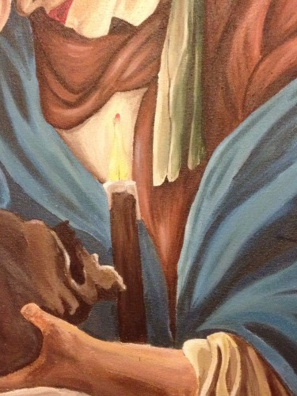
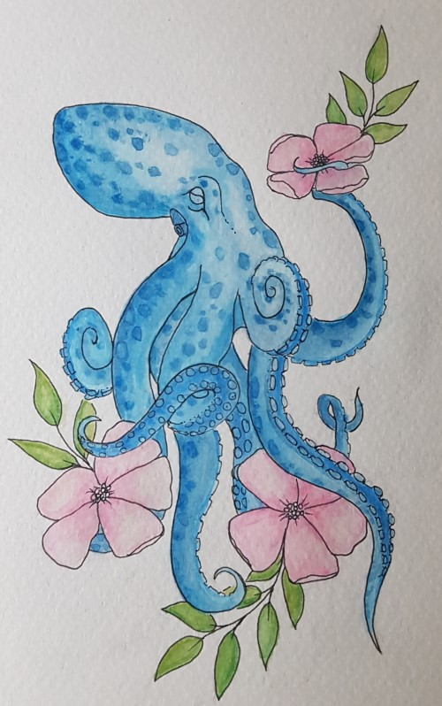
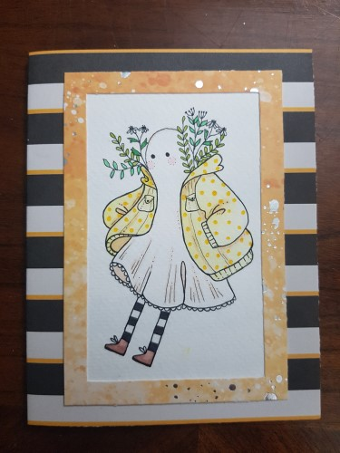
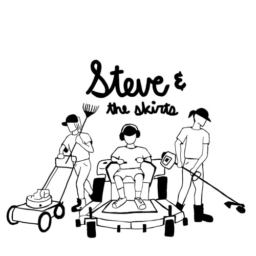

Multimedia
Acrylic
Watercolor
Cards
Digital
Resume
Multimedia
Acrylic
Watercolor
Cards
Digital
Resume
At the core, I use art as a way to convey emotions. Each work I do has an emotion or memory focused into it. As emotions are complex, so is my art. When I create abstract pieces, there is no focus, it is purely channeling emotions onto the canvas. More traditional art is very intentional, with every part having a meaning, a reason to be there. Each piece has a story and many meanings layered behind it.
As an artist, I am always trying new things. Perhaps too many things, however I find that there is always another way to express your vision. I enjoy working with different media, but at the core I work with acrylic on canvas. I enjoy more of a 'hands-on' approach, working with the paint and feeling it out onto the canvas.
"Art should distub the comfortable and comfort the disturbed." Cesar A. Cruz
ink, charcoal on paper
21x17in
acrylic, string on canvas
1.5x2 ft
acrylic on wall; variable size (about 4.5x6ft)
acrylic on canvas; 17x13"
acrylic on canvas; 2x3 ft
watercolor on paper; 17x11 in
watercolor on paper; 10x17 cm
watercolor on paper; 7x10cm
watercolor on paper; 7x10cm
marker transfered transfered to digital
digital

watercolor transfered to digital